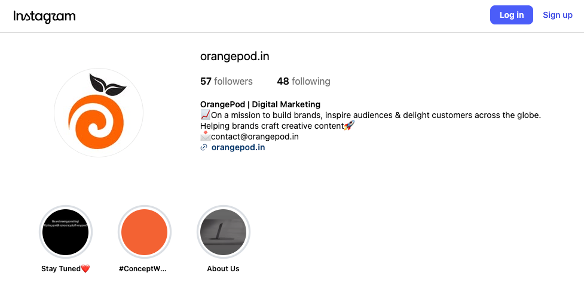
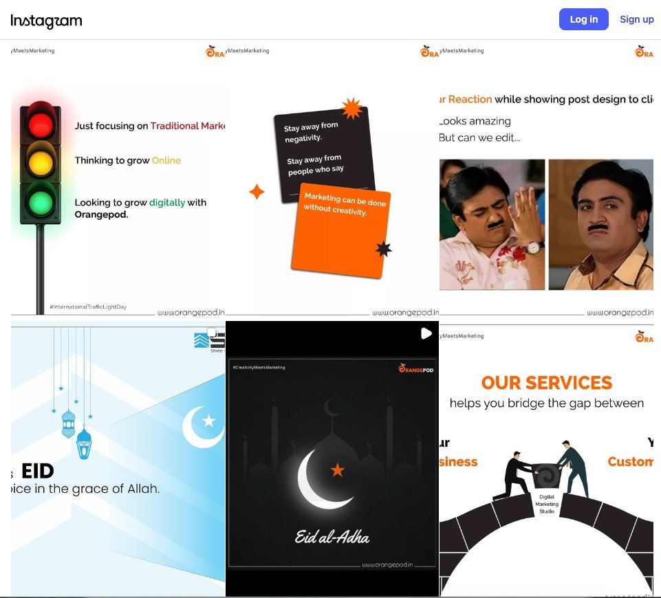

OrangePod: Scaling Client Delivery & SLA Alignment
How structuring productized onboarding, upfront design alignment, and client SLAs turned service chaos into an 87% complaint reduction across multi-channel client accounts.
1. Context & The Friction
In late 2021, during peak pandemic remote work and while completing final-year university lectures early morning, I joined early-stage digital marketing studio OrangePod as Product In-Charge.
The agency serviced small-to-medium businesses across four primary offerings: Web Development, Google Business Profile Management, Meta Ads (Facebook & Instagram), and Organic Social Media Handling.
2. Public Brand & Creative Execution
OrangePod positioned itself as a creative digital partner for brands navigating online transition during COVID-19. Bridging creative production with dependable delivery was the top operational bottleneck.


3. Streamlining Product Delivery & Design Alignment
To stop reactive firefighting, I productized the service delivery lifecycle from initial pitch to month-end reporting:
4. Steering Customer Service: The 87% Reduction
Customer churn in agency and service-product hybrids is almost always an expectations problem, not a skill problem. By establishing myself as the central client-facing escalation point:
- Root-Cause Tagging: Logged every incoming complaint to pinpoint the source (copy error, scope creep, missed deadline, or mismatched tone). Over 70% stemmed from unclear initial design scoping.
- Client Management Playbook: Trained the internal team on proactive communication—alerting clients before a bottleneck occurred rather than explaining after an SLA slipped.
- Measurable Outcome: Within 3 months of rollout, customer grievance volume fell by 87%, delivery turnaround became predictable, and client retention into month-to-month retainers stabilized.